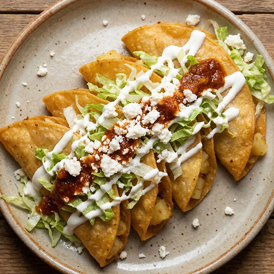
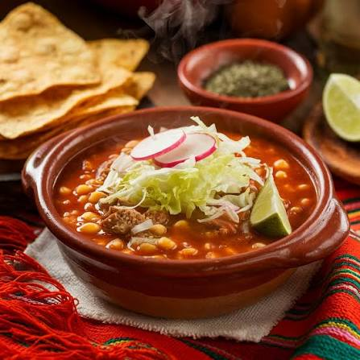
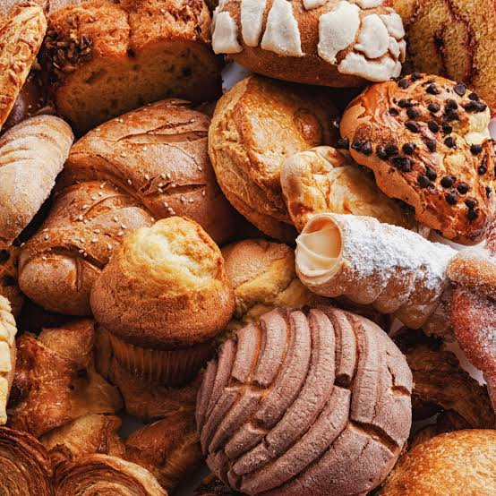

Sabores de México
La gastronomía cuenta historias a través de sus ingredientes.

Tacos
Los tacos pueden prepararse con distintos ingredientes y son una parte muy conocida de la comida mexicana.

Pozole
El pozole es un platillo de maíz que suele compartirse durante reuniones y celebraciones.

Pan dulce
El pan dulce acompaña desayunos y meriendas, con formas y sabores para todos los gustos.